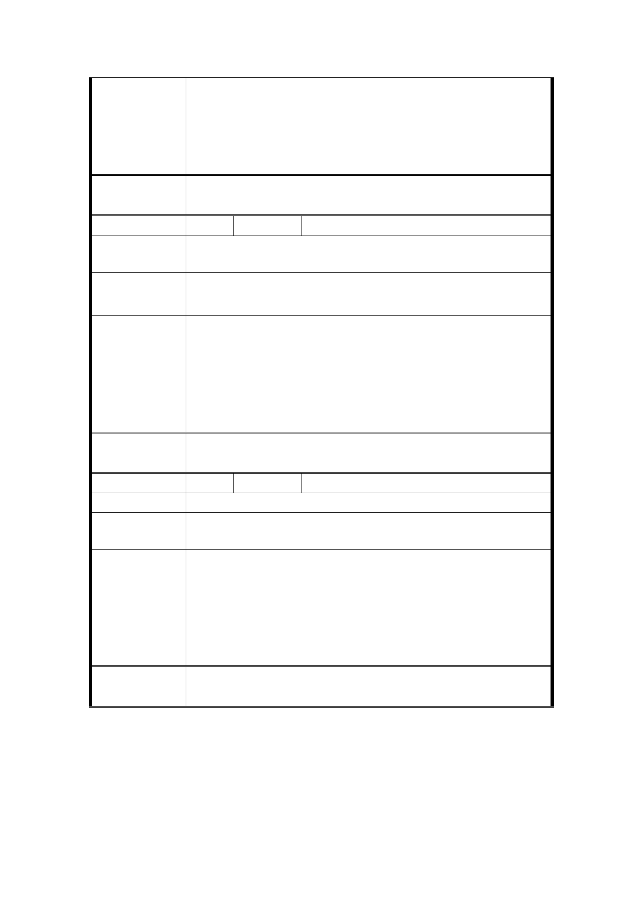

意 見 北兩側商業發展。經檢視民眾陳情所提建議擴張範圍
(往南至西藏路)係臨接20公尺計畫道路，周邊均屬住宅
區，商業使用未明顯，尚不符商業區通盤檢討變更商業
區之原則，經檢討尚難變更商業區，本案仍建議維持原
範圍。
委
決
員
會
議
同決議一及附帶決議二。
編 號 1-A 陳情人 中正區廈安里涂里長光宇
陳情理由
大眾捷運系統出入口 LG03 已定案東移 370 公尺至本里
中華路西藏路口，將來為商業活動頻繁。
建 議 辦 法 建請商業區中華路二段（愛國西路至汀洲路）東側延至
西藏路，以促進地方商業發展，活絡地區經濟。
本計畫範圍係以40公尺計畫道路為基礎，延續及連結南
北兩側商業發展。經檢視民眾陳情所提建議擴張範圍
市 府 回 應 (往南至西藏路)係臨接20公尺計畫道路，周邊均屬住宅
意 見 區，商業使用未明顯，尚不符商業區通盤檢討變更商業
區之原則，經檢討尚難變更商業區，本案仍建議維持原
範圍。
委
決
員
會
議
同決議一及附帶決議二。
編
號2
陳情人 游○宇
陳 情 理 由 人潮不多，要發展成為商業區的基礎不好。
建議辦法
開放騎樓能夠設置攤販或小型展示商品區，以期增加商
業多元性，進而活化人潮流動。
本計畫區現況沿街商業使用發達，係成帶狀發展之商業
區類型，主要提供周邊居民日常生活需求，中華路二段
市 府 回 應 屬交通流量大之主要道路，現況商業需求漸增，不少住
意 見 宅區低樓層已轉作商業使用，變更為商業區以符合商業
均衡發展實際需求，並落實建物合法使用之管理。至騎
樓使用仍應符合道路交通管理處罰條例規定。
委
決
員
會
議
同決議一及市府回覆意見。
審議事項 二
案名：變更臺北市大同區圓環段三小段 560 地號等 4 筆土地國小
- 12 -